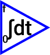
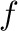

Next: Integral Block context menu
Up: Operations
Previous: Export Godley Table
Contents
Creates an integration (or stock) variable.

The operator can be placed on the canvas in two ways:
- From the integrate widget
on the
toolbar; or
- By typing the letters ``integrate'' on the canvas and then pressing
the Enter key.
Integral blocks require two inputs: the flow being integrated, which
is attached to the top input on the block, labeled 
; and the
initial conditions for the integral, which is attached to the bottom
input, labeled .
Subsections